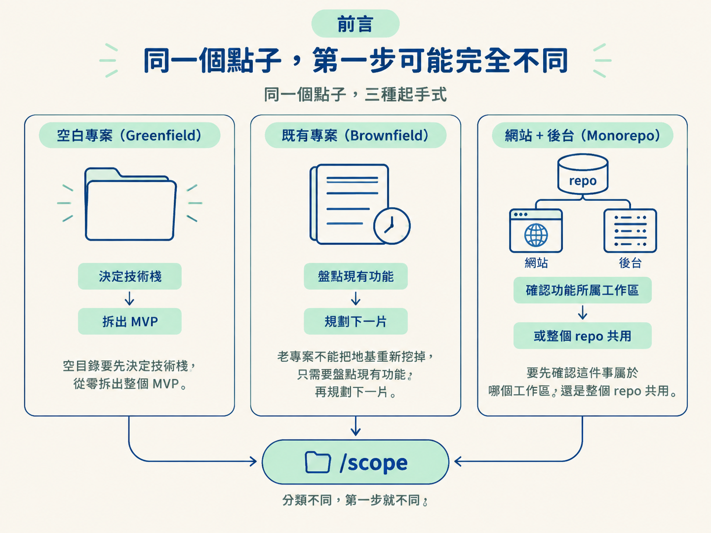
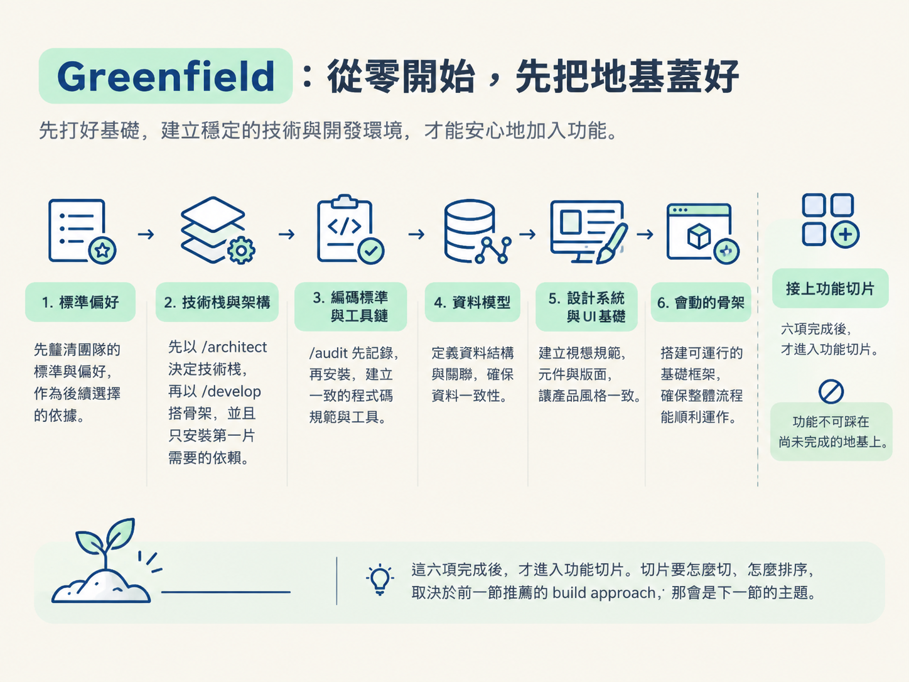
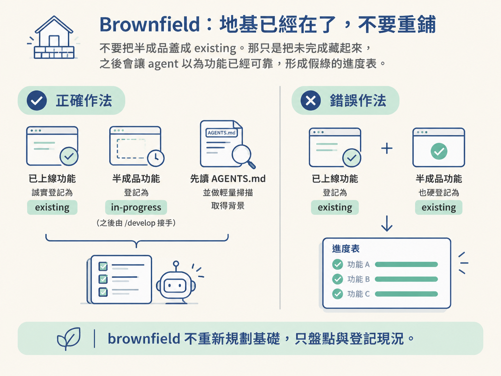
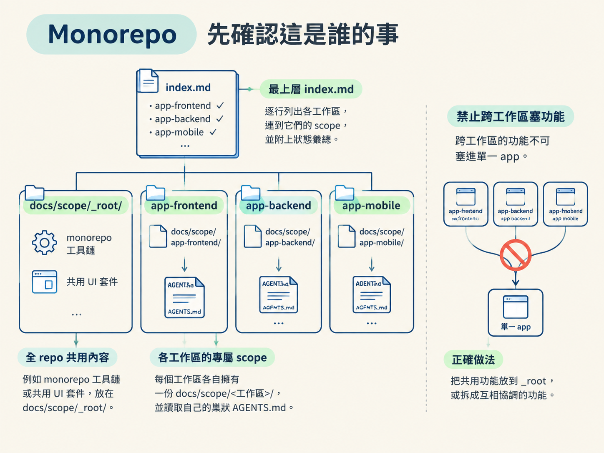

這一節要學會判斷手上的 repo 屬於 greenfield、brownfield 還是 monorepo，知道每一種情況的第一步，也理解為什麼所有路線都必須先確認基礎，再開始規劃功能。
假設你想做一個非同步站立會議工具。點子本身沒有變，但你可能面對三種完全不同的工作環境：一個剛建立、空空如也的資料夾；一個已經寫了三年、包含十幾個畫面的老專案；或者一個把網站和後台放在同一份 repo 裡的 monorepo。
這三種情況下，/scope 的第一步不能照同一套劇本走。空目錄要先決定技術棧，從零拆出整個 MVP；老專案不能把地基重新挖掉，只需要盤點現有功能，再規劃下一片；monorepo 則要先確認這件事屬於哪個工作區，還是整個 repo 共用。

如果沒有先分清楚類型，就可能產生很荒謬的計畫：例如要求一個有三年歷史的專案「重新決定技術棧」，或把跨應用程式的功能硬塞進某一個 app 的計畫裡。
前一節提到，plan 的第一步是分類 repo。現在就把這一步攤開來看。
分類的依據是掃描 repo。掃描時會跳過 node_modules/ 和 .git/ 這類不該納入判斷的目錄。
規則很直接：
.ts、.tsx、.js、.py、.go 或 .rs，就視為既有專案。分類完成後，只會讀取對應的路線檔案，不會把三套劇本全部塞進 context。之後如果 repo 的類型改變，才會切換到另一條路線。
Greenfield 專案的劇本，是從零拆出整個 MVP，而且遵守基礎先行。任何功能切片，都不應該在它所依賴的地基還沒完成前就開始施工。
這些基礎不是藏在某個功能任務底下的雜項，而是要被清楚列在計畫裡的功能。排序時，先做成本較低、又能支撐後續工作的項目，再做依賴它們的項目。
Decide the stack (spec)，交給 /architect 選定技術棧；再建立執行格：Scaffold from the decision，交給 /develop 搭出可執行的骨架。容易犯的錯是：雖然完整決定技術棧是正確的，骨架卻不該一次安裝所有未來可能用到的套件。第一片功能需要什麼，就先安裝什麼；其他依賴等到真的建置該功能時再加入。/audit 從實際搭好的專案中擷取慣例與工具選擇，寫進根目錄的 AGENTS.md，再由 /develop 安裝這些工具。/audit 負責判斷與記錄，不負責安裝，因此必須排在骨架完成之後。這六項完成後，才進入功能切片。切片要怎麼切、怎麼排序，取決於前一節推薦的 build approach；那會是下一節的主題。

Brownfield 專案的情況正好相反。資料庫、技術棧和設計系統可能早已存在，因此不要重新規劃基礎。第一步是把已經建好的功能登記下來，作為背景資訊，再在現有基礎上規劃下一片。
登記時會讀取根目錄的 AGENTS.md，並進行一次輕量的程式碼掃描。如果 repo 很大，這次掃描會交給唯讀的探索型 subagent，讓它回傳一張精簡的地圖，而不是把整棵目錄樹都塞進對話。
評估狀態時要誠實：
existing。in-progress，讓之後的 /develop 可以接手。不要把半成品蓋成 existing。那只是把未完成藏起來，之後會讓 agent 以為功能已經可靠，形成假綠的進度表。

如果既有專案連根目錄的 AGENTS.md 都沒有，報告會提醒你先跑一次 /audit，取得真實的專案背景。
另外，如果 scope 已經存在，之後又再次執行相同流程，系統會先讀完整份 scope，將它當作去重基準。已經列在清單上的功能不會被重複加入，只會補上目前的漂移。
Monorepo 多了一個關鍵問題：這件事究竟屬於哪個工作區？
每個工作區各自擁有一份 docs/scope/<工作區>/。整個 repo 共用的內容，例如 monorepo 工具鏈或共用 UI 套件，則放在 docs/scope/_root/。最上層另外放一份 index.md，每個工作區各占一行，連到它的 scope，並附上狀態彙總。

平常可以使用 /scope web <點子>，明確指定要規劃的工作區。如果只輸入不帶參數的 /scope，它會用面板詢問你要規劃哪個工作區，或判斷是否屬於整個 repo。
每個工作區也要讀取自己的巢狀 AGENTS.md，因為不同 app 的技術棧可能不一樣。不能只看 repo 根目錄的一份設定，就假設所有工作區都遵守相同規則。
還有一條不能偷偷繞過的原則：跨工作區的功能，不要塞進某一個 app 的計畫裡。它應該放在 _root，或拆成幾個彼此協調、分別屬於各工作區的功能。
工作區本身沒有程式碼，就走 greenfield 的基礎先行；已經有程式碼的工作區，就走 brownfield 的功能登記。也就是說，monorepo 不是第三種完全獨立的施工方式，而是先分工作區，再讓每個工作區走適合自己的路線。
你可能會注意到，三條路線裡只有 greenfield 真的需要從頭鋪基礎。原因是「基礎先行」是一個原則，不是一個固定步驟。
Greenfield 缺少基礎，所以必須把基礎明確規劃成一組功能；brownfield 的基礎已經存在於程式碼裡，所以重點是辨認並登記它，而不是重新做一遍；monorepo 則要先把問題分派到正確的工作區，再依各工作區的狀態判斷該走哪條路線。
三種情況的共同點是：功能切片不能踩在還沒站穩的地基上。否則 agent 可能在錯的工作區動工、重複安裝整套依賴，或把半成品當成已完成，最後看起來有進度，實際上卻留下更多返工。
plan 的第一步是掃描 repo 並分類，掃描時跳過
node_modules與.git：有原始碼就是 brownfield，沒有就是 greenfield，多個工作區設定就是 monorepo。分類完成後，只讀取一個對應的路線檔案。Greenfield 從零開始，依序規劃標準偏好、技術棧與架構（把決定和搭骨架分開）、編碼標準與工具鏈、資料模型、設計系統，以及會動的骨架。Brownfield 的基礎已經存在，不要重鋪，而要誠實登記
existing與in-progress，再規劃下一片。Monorepo 則讓每個工作區各自擁有 scope，全 repo 共用的內容放在_root，跨工作區的功能不能塞進單一 app。
現在你已經知道地基要怎麼判斷與安排。接下來的問題是：功能切片本身要怎麼切、怎麼排序？下一節會介紹四種切法。同一組功能，採用不同切法後，可能會被排成完全不同的形狀。